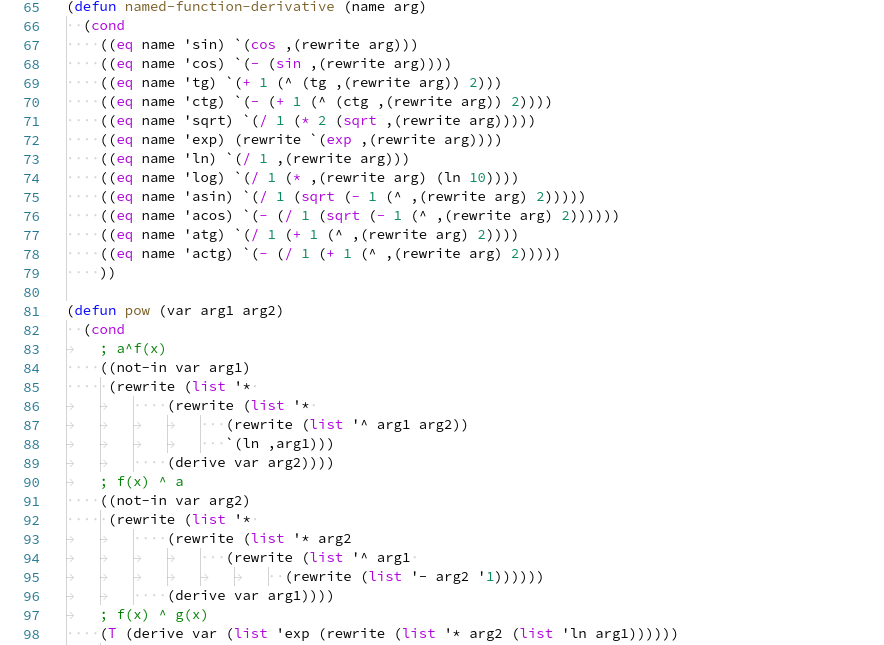

Лабораторна робота 6. Символьні дані, множини, узагальнені арифметичні операції
Завдання:
Написати процедури, що здійснюють операції над символьними даними, множинами та узагальненими сeлекторами.
Варіант 5. Написати програму символьного диференціювання (по одній змінній) алгебраїчних виразів, представлених у формі правильних префіксних виразів, які містять усі арифметичні операції та вказані у варіанті математичні функції: cos(x), pow (x, n).
Алгоритм програми:
Щоб отримати похідну виразів, спочатку потрібно розбити вираз на окремі блоки та отримати їх похідні. Наприклад кожний доданок може бути виразом, який потрібно розкласти на складові. Розбиваючи їх на все більш дрібні частини, можна дійти до стадії, коли всі частини є або константами, або змінними, і їх похідні дорівнюватимуть або 0, або 1.
Код програми:

Посилання на проект з вихідним кодом:
Лабораторна робота 6Скрін-шот результатів:
Аналіз достовірності результатів:
Висновки:
Під час виконання лабораторної роботи були вивчені символьні дані, множини, узагальнені арифметичні операції мови Scheme. Було розроблено програму, в якій реалізовано процедури, що обчислюють символьне диференціювання (по одній змінній) алгебраїчних виразів, представлених у формі правильних префіксних виразів, які містять усі арифметичні операції та вказані у варіанті математичні функції: cos(x), pow (x, n).